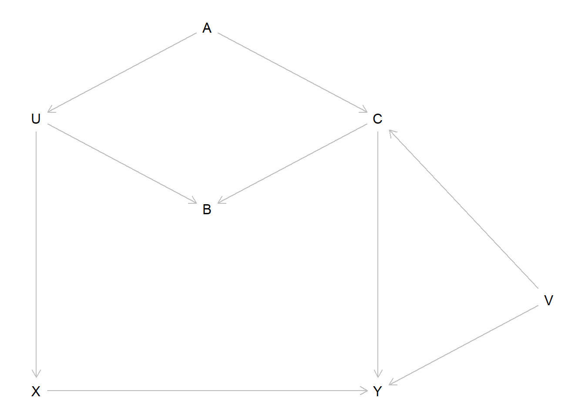
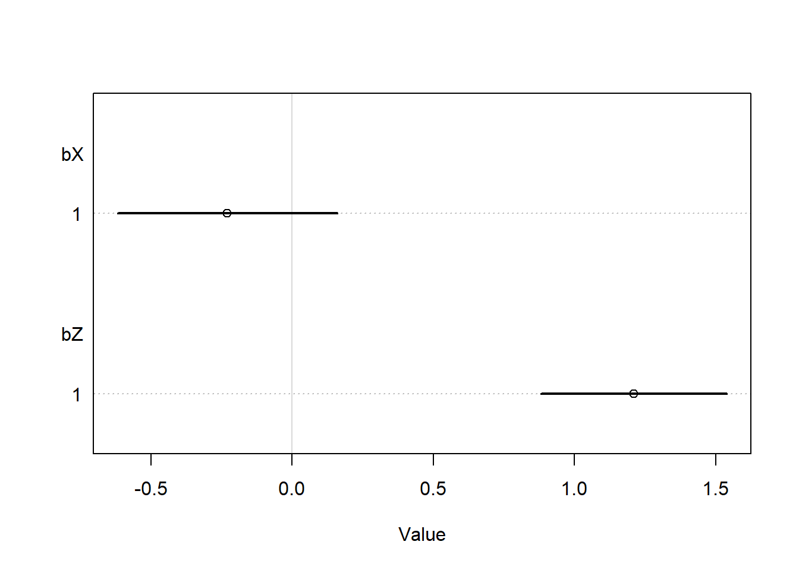
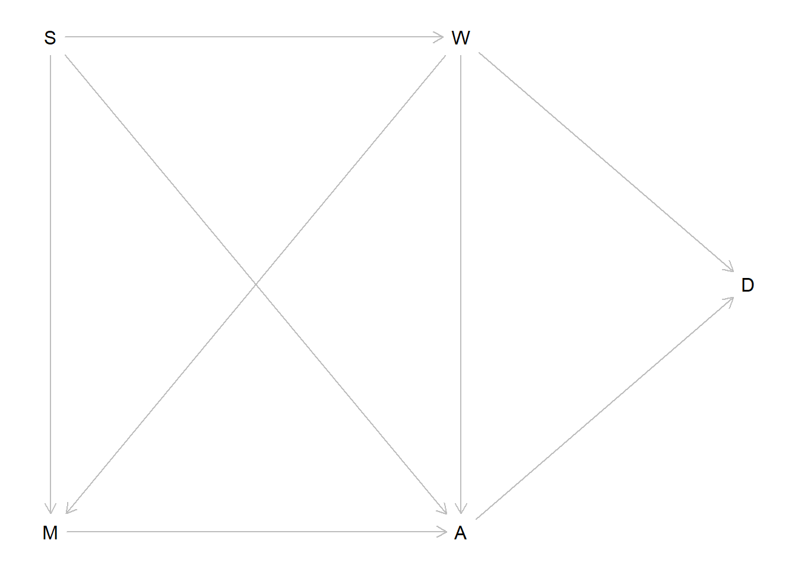
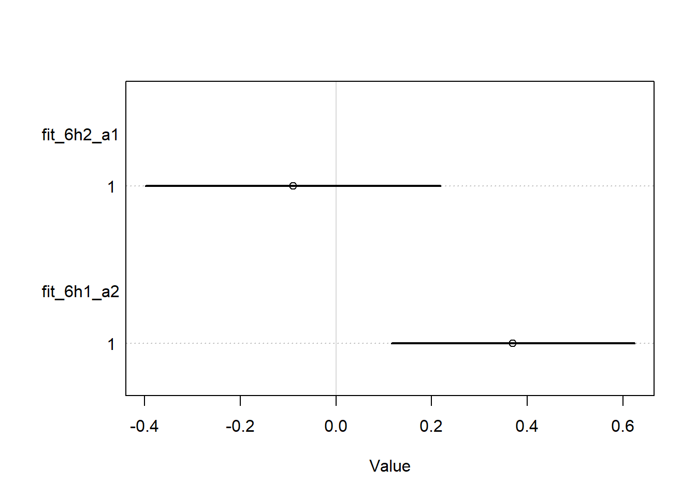
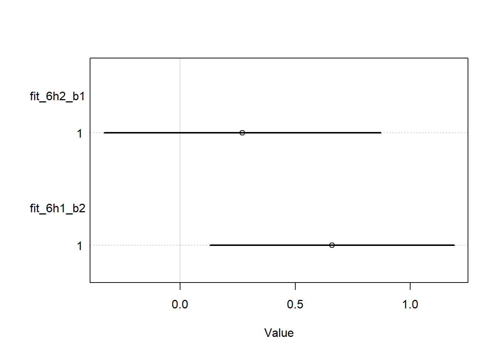
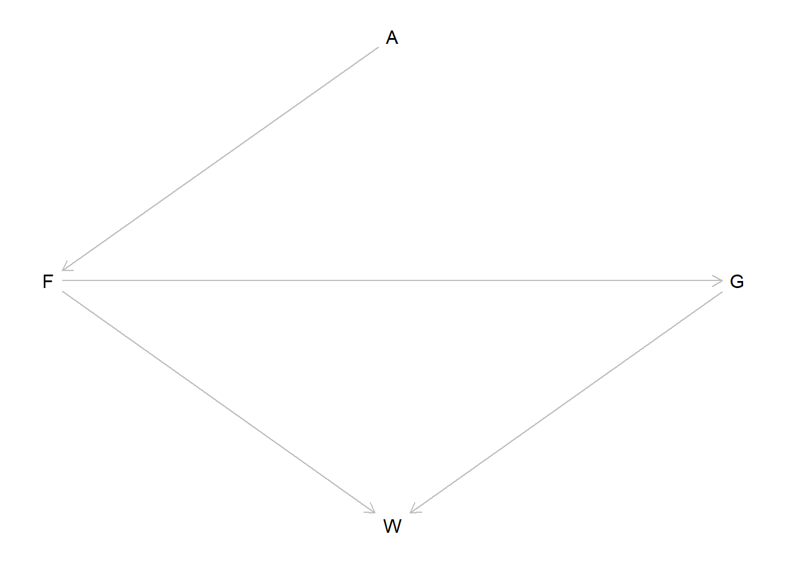
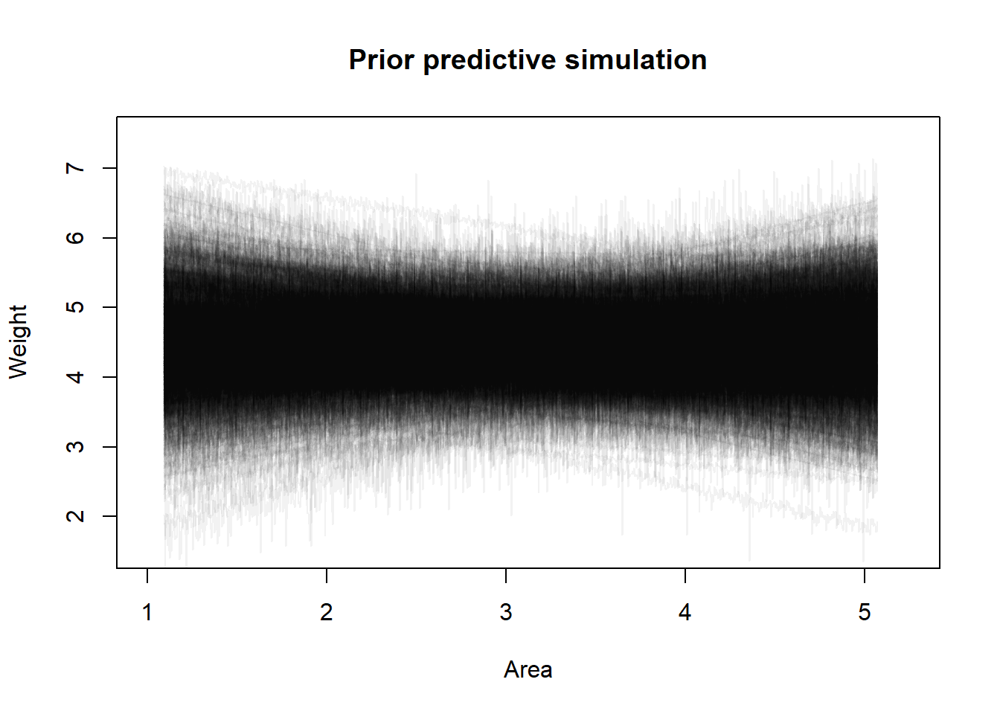
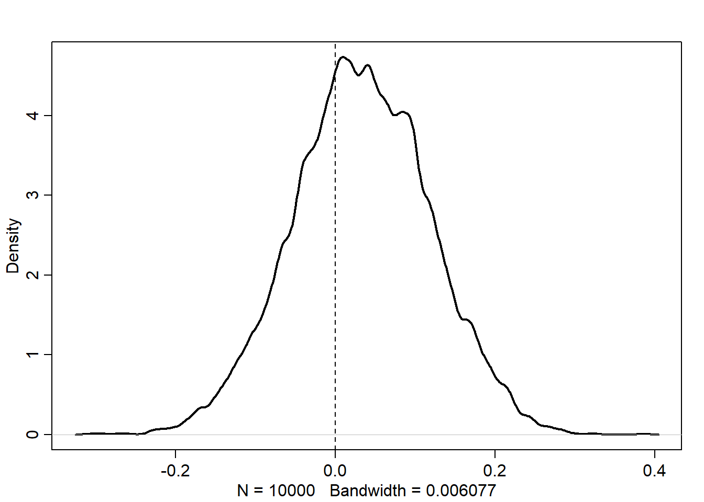

This chapter discusses three common pitfalls that can lead our statistical models to misbehave and make our causal interpretations difficult or incorrect. The three major topics are collider bias (selection-distortion), multicollinearity in regression models, and post-treatment bias. The chapter further expands on the idea of DAGs as graphical causal models that was introduced in the previous chapter.
6.1 Chapter notes
The Selection-distortion effect (AKA Berkson’s/Berksonian bias, generalized to the idea of collider bias) occurs when the selection of a sample changes the relationship between the observed variables. (I.e. there is/isn’t a relationship between the two variables on the sample, but in the larger population, there isn’t/is a relationship.) Berkson’s bias refers to the particular effect that when selecting from a population on two desirable traits, there often appears to be a negative correlation between the desirable traits in the selected sample.
Multicollinearity refers to a very strong association between two or more predictor variables, conditional on the other variables in the model. When variables are multicollinear, the posterior distribution will seem to suggest that none of the multicollinear variables are truly associated with the outcome, even if the reality is that they are all strongly associated.
Post-treatment bias: a form of included variable bias where variables that are also causal descendents of the treatment, are controlled for when assessing the response. That is, you measure something that is not the outcome of interest and is also affected by the treatment, and you adjust for that quantity when analyzing the outcome. This induces collider bias.
Controlling for a collider on a DAG induces D-separation, meaning that the DAG is no longer connected.
When you condition on a collider (a common descendent), it creates statistical, although not necessarily causal, relationships between the ancestors.
Even unmeasured causes can induce collider bias. Selection bias in a study can often be interpreted as conditioning on a collider during the sampling process. See the parents and grandparents example in section 6.3.2.
There are four types of elemental confounds: DAG structures that allow us to determine causal and non-causal pathways.
The fork: two variables have a common cause (Z -> X; Z -> Y).
The pipe: one variable is intermediate in the causal relationship between two others (X -> Z -> Y).
The collider: two variables have a common descenent (X -> Z; Y -> Z).
The descendant: a variable which descends from another, capturing part of the ancestor’s statistical signal (in the previous example, if we also have Z -> D, D will appear to be a collider as well, even if it is just a descendant).
Every DAG is built out of these four types of relationships, and we can use specific rules for DAGs to determine what variables need to be included in models for a causal effect.
“Multiple regression is no oracle, but only a golem.”
6.2 Exercises
6.2.1 6E1
Three mechanisms that can produce false inferences about causal effects in a multiple regression model are: multicollinearity, the selection- distortion effect, and post-treatment bias.
6.2.2 6E2
For an example of post-treatment bias, consider a vaccine efficacy trial for influenza (or I guess any disease). Suppose we have a known surrogate of protection, an immunological measurement that is strongly associated with protection from the disease. For influenza, one potential biomarker is hemagglutinin inhibition (HI) titer, which is typically measured before and after (around 21 to 28 days) vaccination. If one did a challenge study or a long followup period of surveillance, we can record which individuals are ultimately infected with influenza. Including participants’ HI titers before vaccination when modeling vaccine protection is OK depending on the context, but including participants HI titer after vaccination would induce post-treatment bias, because vaccination directly affects HI titer.
6.2.3 6E3
The fork (Z -> X; Z -> Y): X ⫫ Y | Z
The pipe (X -> Z -> Y): X ⫫ Y | Z
The collider (X -> Z; Y -> Z): X ⫫ Y; X !⫫ Y | Z
The descendent: conditional independencies are the same as the parent
6.2.4 6E4
Suppose we have two variables (call one the exposure and the other the outcome) which are both causes of a third variable. If that third variable determines which observations we observe (for example, a restaurant existing or a patient agreeing to participate in a study), in our observed sample we will see a correlation between the exposure and the outcome, just because we are only seeing observations where the third variable is already specified.
In the funded grants example, a funded grant must be high in at least one of newsworthiness or trustworthiness, otherwise it will not be funded. If we could see all grants, we would not see a correlation between newsworthiness and trustworthiness. But when we only look at funded grants, we condition on a common descendant of both variables (a collider), which makes a spurious relationship appear.
6.3 6M1
The new DAG including \(V\) as an unobserved common cause of \(C\) and \(Y\) looks like this.
dag_6m1 <- dagitty::dagitty("dag { U [unobserved] V [unobserved] X -> Y X <- U <- A -> C -> Y U -> B <- C C <- V -> Y }")dagitty::coordinates(dag_6m1) <-list(x =c(U =1, V =4, X =1, Y =3, A =2, B =2, C =3),y =c(U =1.5, V =2.5, X =3, Y =3, A =1, B =2, C =1.5) )dagitty::exposures(dag_6m1) <-"X"dagitty::outcomes(dag_6m1) <-"Y"plot(dag_6m1)

We still have all of the same paths from the previous example, i.e.:
\(X \to Y\),
\(X \leftarrow U \leftarrow A \to C \to Y\), and
\(X \leftarrow U \to B \leftarrow C \to Y\).
The first path is the direct path. The second is an open backdoor path through \(A\). The third is a closed backdoor path, as it passes through the collider \(B\). By adding the unobserved confounder \(V\), we create two new backdoor paths,
\(X \leftarrow U \leftarrow A \to C \leftarrow V \to Y\), and
\(X \leftarrow U \to B \leftarrow C \leftarrow V \to Y\).
The first path is an open backdoor path, and the second path is a closed backdoor path. We can check which paths exist and are open with dagitty.
dagitty::paths(dag_6m1)
$paths
[1] "X -> Y" "X <- U -> B <- C -> Y"
[3] "X <- U -> B <- C <- V -> Y" "X <- U <- A -> C -> Y"
[5] "X <- U <- A -> C <- V -> Y"
$open
[1] TRUE FALSE FALSE TRUE FALSE
Now we need to close the two open paths, without opening either of the closed paths. Conditioning on \(C\) would close both of the open paths, but would also open the fifth path. However, conditioning on \(A\) will close both open paths without opening either of the closed paths. So \(\{A\}\) is our sufficient adjustment set. We can verify this with dagitty.
dagitty::adjustmentSets(dag_6m1)
{ A }
6.4 6M2
First we’ll do the simulation: we want \(X\) and \(Z\) to be highly correlated.
X Z Y
X 1.0000000 0.8925919 0.6779960
Z 0.8925919 1.0000000 0.7998096
Y 0.6779960 0.7998096 1.0000000
We can see that all of the variables are strongly associated, but \(X\) and \(Z\) have a particularly strong correlation. But now we want to use a model that adjusts for both.
fit_6m1 <- rethinking::quap(flist =alist( Y ~dnorm(mu, sigma), mu <- a + bX * X + bZ * Z, a ~dnorm(0, 0.5),c(bX, bZ) ~dnorm(0, 1), sigma ~dexp(1) ),data =list(X = X, Y = Y, Z = Z) )coeftab(fit_6m1) |>coeftab_plot(pars =c("bX", "bZ"))

Interestingly, we can see that we do not get the same problem as the previous multicollinearity example. The confidence intervals appear to be reasonable, and we see a strong effect of \(Z\) but no effect of \(Y\). Intuitively, this make sense – \(Z\) and \(Y\) have a stronger correlation than \(X\) and \(Y\), so after we control for \(Z\), the model “finds” all of the signal, and then does not find an effect of \(X\). So if we interpreted this model without considering the causal framework, we would still be mislead by the multicollinearity, but there is nothing obviously wrong – the entire causal effect of \(X\) on \(Z\) is through \(Z\), so this estimate of the direct causal effect of \(X\) makes sense.
6.5 6M3
Here are the adjustment sets for each of the DAGs shown.
Top left DAG: Z only
Top right: nothing
Bottom left: nothing
Bottom right: A only
I also checked using dagitty to verify my answers.
dag1 <- dagitty::dagitty("dag {Z -> X -> Y; A -> Z -> Y; A -> Y}")dag2 <- dagitty::dagitty("dag {X -> Z -> Y; A -> Z -> Y; A -> Y}")dag3 <- dagitty::dagitty("dag {X -> Y -> Z; A -> X -> Z; A -> Z}")dag4 <- dagitty::dagitty("dag {A -> X -> Z; A -> Z -> Y; X -> Y}")lapply(list(dag1, dag2, dag3, dag4), dagitty::adjustmentSets, "X", "Y")
[[1]]
{ Z }
[[2]]
{}
[[3]]
{}
[[4]]
{ A }
6.6 6H1
Using the Waffle House data, we want to find the total causal influence of number of Waffle Houses on divorce rate. First, let’s look at what we have to work with.
data("WaffleDivorce")head(WaffleDivorce)
Location Loc Population MedianAgeMarriage Marriage Marriage.SE Divorce
1 Alabama AL 4.78 25.3 20.2 1.27 12.7
2 Alaska AK 0.71 25.2 26.0 2.93 12.5
3 Arizona AZ 6.33 25.8 20.3 0.98 10.8
4 Arkansas AR 2.92 24.3 26.4 1.70 13.5
5 California CA 37.25 26.8 19.1 0.39 8.0
6 Colorado CO 5.03 25.7 23.5 1.24 11.6
Divorce.SE WaffleHouses South Slaves1860 Population1860 PropSlaves1860
1 0.79 128 1 435080 964201 0.45
2 2.05 0 0 0 0 0.00
3 0.74 18 0 0 0 0.00
4 1.22 41 1 111115 435450 0.26
5 0.24 0 0 0 379994 0.00
6 0.94 11 0 0 34277 0.00
OK, so of course we will assume that there is a direct causal effect of number of Waffle Houses (\(W\)) on divorce rate (\(D\)). From previous work, we know our data are consistent with a \(M \to A \to D\) DAG structure, for \(M\) the marriage rate and \(A\) the median age at marriage, so we’ll incorporate this into our DAG. We also saw that the data are consistent with being in the South affecting \(M\) and \(A\), so we’ll include that in our DAG, and of course we expect to see \(S \to W\). Finally, since we’re trying to find the total causal effect of \(W\), we’ll include \(A \leftarrow W \rightarrow M\) as a sub-DAG as well. Putting it all together, our DAG looks like this.
dag_6h1 <- dagitty::dagitty("dag { M -> A -> D M <- S -> A S -> W W -> D M <- W -> A }" )dagitty::exposures(dag_6h1) <-"W"dagitty::outcomes(dag_6h1) <-"D"dagitty::coordinates(dag_6h1) <-list(x =c(S =1, W =2, D =2.7, M =1, A =2),y =c(S =1, W =1, D =1.5, M =2, A =2) )plot(dag_6h1)

Let’s now figure out what needs to be in our model.
dagitty::adjustmentSets(dag_6h1)
{ S }
We see that to get the total cause effect of \(W\) on \(D\), we need only adjust for \(S\), being in the South. I should probably worry about things like transformations and zero-inflation, but for this exercise I am not going to do that.
Now we’ll fit the model. I’ll allow the intercept to be different for Southern and non-Southern states, but because we’re interested in the total causal effect of Waffle House Numbers, I’ll force the effect to be the same across both groups.
set.seed(100)fit_6h1 <- rethinking::quap(flist =alist( D ~dnorm(mu, sigma), mu <- a[S] + b * W, a[S] ~dnorm(0, 1), b ~dnorm(0, 2), sigma ~dexp(1) ),data = wd )rethinking::precis(fit_6h1, depth =2)
OK, I’m getting a warning but I don’t think it’s doing anything. So I’ll just ignore it. For this model, we can see that there is a strongly positive effect of \(b\). Let’s look at the posterior distribution.
We can see that almost all of the posterior density is above zero, indicating that there is a positive effect of Waffle Houses on divorce rate. For every 1 standard deviation increase in the number of Waffle Houses in a state, the divorce rate is expected to increase by about 0.25 units. Let’s put that back from standardized units into real units.
So we see that we expect the divorce rate to increase by about \(10\%\) for every 98 additional Waffle Houses, or approximately \(0.1\%\) per Waffle House. This is the total causal effect based on our DAG, even though I would guess that the direct effect is zero and this entire effect is through location.
6.6.1 6H2
First, we need to check the implied causal independencies of the DAG.
Test one: \(D\) and \(M\) should be independent after adjusting for \(A\) and \(W\).
set.seed(100)wd2 <-c( wd,M =list(standardize(WaffleDivorce$Marriage)),A =list(standardize(WaffleDivorce$MedianAgeMarriage)))fit_6h2_a1 <- rethinking::quap(flist =alist( D ~dnorm(mu, sigma), mu <- a + bm * M + ba * A + bw * W, a ~dnorm(0, 1),c(bm, ba, bw) ~dnorm(0, 2), sigma ~dexp(1) ),data = wd2 )fit_6h1_a2 <- rethinking::quap(flist =alist( D ~dnorm(mu, sigma), mu <- a + bm * M, a ~dnorm(0, 1),c(bm) ~dnorm(0, 2), sigma ~dexp(1) ),data = wd2 )rethinking::coeftab( fit_6h2_a1, fit_6h1_a2) |> rethinking::coeftab_plot(pars =c("bm"))

Yes, we can see that if we only include \(M\) (fit_6h1_a2), we see an effect, but if we control for \(A\) and \(W\), as in fit_6h1_a1, we do not.
Now let’s check the second test: \(D\) and \(S\) should be independent if we control for \(A\) and \(W\).
set.seed(100)fit_6h2_b1 <- rethinking::quap(flist =alist( D ~dnorm(mu, sigma), mu <- a + bs * S + ba * A + bw * W, a ~dnorm(0, 1),c(bs, ba, bw) ~dnorm(0, 2), sigma ~dexp(1) ),data = wd2 )fit_6h1_b2 <- rethinking::quap(flist =alist( D ~dnorm(mu, sigma), mu <- a + bs * S, a ~dnorm(0, 1),c(bs) ~dnorm(0, 2), sigma ~dexp(1) ),data = wd2 )rethinking::coeftab( fit_6h2_b1, fit_6h1_b2) |> rethinking::coeftab_plot(pars =c("bs"))

We see exactly the same interpretation here: when only \(S\) is in the model, all of the posterior density is above 0, but when we control for \(A\) and \(W\), a significant portion is below zero and the mean is lower. So I think we can say that our data appear to be consistent with the conditional independencies that our DAG implies.
We can also do these tests automatically used the method recommended by dagitty. I don’t know that much about these results, but they agree with our modeling results, which is good!
estimate p.value 2.5% 97.5%
D _||_ M | A, W -0.0855530 0.5650794 -0.3613429 0.2035528
D _||_ S | A, W 0.1349902 0.3622409 -0.1550991 0.4044034
6.7 6H3
Now we are back to the fox problems. I’ll reproduce the DAG first just so I have it in my notes.
fox_dag <- dagitty::dagitty("dag { A -> F -> G -> W F -> W }" )dagitty::coordinates(fox_dag) <-list(x =c(A =2, F =1, G =3, W =2),y =c(A =1, F =2, G =2, W =3) )plot(fox_dag)

First, we want to infer the total causal influence of area (A) on weight (W). I’ll go ahead and set up the data, and standardize all the variables as McElreath recommends. I’ll also model the log weight instead of the raw weight so we can ensure that our predictions remain positive.
Now we’ll adopt a model for the weight. Since it is logged and standardized we’ll use a Gaussian likelihood function. To set priors, we first need to determine our adjustment set. There are two causal paths between \(A\) and \(W\):
\(A \to F \to W\) and
\(A \to F \to G \to W\).
If we want the total causal effect of \(A\) on \(W\), there are no closed paths and we do not need to adjust for any other variables. We can confirm this with dagitty.
I tuned the parameters for the prior distributions using a prior predictive simulation to ensure that the prior predictions stay within the expected outcome space. As usual, I think that making this model have an intercept of zero potentially makes more sense (a fox with no area should starve) and then we would not expect this relationship to be linear, but we will just mess with the priors until the predictions look reasonable.
set.seed(101)a <-rnorm(1000, 4.5, 0.5)b <-rnorm(1000, 0, 0.25)sigma <-rexp(1000, 10)plot(NULL,xlim =c(1, 5.25),ylim =c(1.5, 7.5),xlab ="Area",ylab ="Weight",main ="Prior predictive simulation")x <-seq(min(f2$A), max(f2$A), length.out =1000)xp <- x *attr(f2$A, "scaled:scale") +attr(f2$A, "scaled:center")out <-vector(length =1000, mode ="list")for (i in1:1000) {# Sample y's from their distribution y <-rnorm(1000, a[i] + b[i] * x, sigma[i])# Backtransform to original scale yp <-exp(y *attr(f2$W, "scaled:scale") +attr(f2$W, "scaled:center")) out[[i]] <- yplines(x = xp, y = y, type ="l", col = rethinking::col.alpha("black", 0.05))}

I think that looks fine but I have to admit that I find assigning reasonable priors to standardized data quite difficult, it feels like just randomly picked numbers under the lines look ok. Now we can finally fit our regression and get the estimated causal effect.
m_6h3 <- rethinking::quap(flist =alist( W ~dnorm(mu, sigma), mu <- a + b * A, a ~dnorm(4.5, 0.5), b ~dnorm(0, 0.25), sigma ~dexp(10) ),data = f2)rethinking::precis(m_6h3)
mean sd 5.5% 94.5%
a 0.14011603 0.08988426 -0.003536369 0.2837684
b 0.03384817 0.08470967 -0.101534245 0.1692306
sigma 0.96550793 0.06089243 0.868190063 1.0628258
Let’s look at the posterior distribution of \(\beta\).
post <-extract.samples(m_6h3)dens(post$b, lwd =2)abline(v =0, lty =2)

We can see that while the density of \(\beta\) is more than 50% above zero, there is a substantial amount of the density on either side of zero. So in general, it seems that area size is not directly correlated to fox weight. If anything, there is a small positive effect, but it is not very strong. We can get predictions on the original scale as well.
As we would expect from the model estimates, there is a slight positive trend with incredibly wide credible intervals.
6.8 6H4
Next we want to infer the total causal effect of adding food. Since we want to know the total causal effect, we don’t need to adjust for anything else in the model, since \(G\) is a mediator on the causal path. This time I’ll just use standard priors since it doesn’t really matter that much.
m_6h4 <- rethinking::quap(flist =alist( W ~dnorm(mu, sigma), mu <- a + b *`F`, a ~dnorm(0, 1), b ~dnorm(0, 1), sigma ~dexp(1) ),data = f2)rethinking::precis(m_6h4)
mean sd 5.5% 94.5%
a 9.224085e-10 0.09165572 -0.1464835 0.1464835
b -1.533812e-02 0.09205000 -0.1624518 0.1317756
sigma 9.913351e-01 0.06467093 0.8879784 1.0946917
OK, we see a similar thing here. There is a possibly a slight negative relationship, but it looks like there is really no relationship here.
6.9 6H5
Now we want to get the total causal effect of group size, \(G\). Now we have to also control for food, \(F\), because it is a confounder on one of the paths from \(G \to W\).
m_6h5 <- rethinking::quap(flist =alist( W ~dnorm(mu, sigma), mu <- a + bF *`F`+ bG * G, a ~dnorm(0, 1), bF ~dnorm(0, 1), bG ~dnorm(0, 1), sigma ~dexp(1) ),data = f2)rethinking::precis(m_6h5)
Ok, interestingly we can now see a strong positive effect of \(F\) and a strong negative effect of \(G\). If we plot the data stratified by group size, we can understand this effect a bit better. This is an example of a masked relationship. Overall, average food appears to have a negative effect on weight, which doesn’t seem to make sense.
However, for groups of a given size, the more food there is, the heavier those foxes tend to be. But for healthier (heavier) foxes, it is likely that more new foxes are born, and despite the fact that the foxes are in a more abundant area, there is less food per fox. So within a group size, having more food is good. But if the group size expands without a simultaneous increase in food supply, there will be less food available for each fox. However, note that for the high group sizes, only one group was observed in each. So perhaps our estimates contain selection bias, if the groups that were recorded are not typical examples of foxes with high group sizes.
ggplot(foxes, aes(x = avgfood, y = weight, col =factor(groupsize))) +geom_point(alpha =0.5) +geom_smooth(method ="lm", alpha =0.5) + zlib::theme_ms() +geom_smooth(method ="lm", aes(group =1, color ="overall")) +scale_color_manual(values =c(viridisLite::viridis(7), "black") ) +labs(x ="Average food", y ="Weight", col ="Group size")
`geom_smooth()` using formula 'y ~ x'
`geom_smooth()` using formula 'y ~ x'